토목산업기사 (2003-08-31 기출문제)
1과목: 응용역학
1. 다음 그림과 같은 세개의 힘이 평형상태에 있다면 C 점에서 작용하는 힘 P 와 BC사이의 거리 x 는?
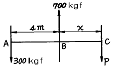
- P = 400 kgf, x = 3 m
- P = 300 kgf, x = 3 m
- P = 400 kgf, x = 4 m
- P = 300 kgf, x = 4 m
(정답률: 알수없음)

2. 그림과 같은 구조물의 부정정 차수는? (단, A,B 지점과 E절점은 힌지이고 나머지 절점은 고정(강결절점)이다.)
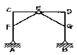
- 1차 부정정
- 2차 부정정
- 3차 부정정
- 4차 부정정
(정답률: 24%)
3. 그림과 같이 로우프 C점에 500kgf의 무게가 작용할 때 AC가 받는 장력은?
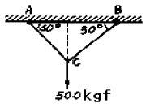
- 288kgf
- 344kgf
- 433kgf
- 577kgf
(정답률: 알수없음)
4. 변형률이 0.015일 때 응력이 1,200kgf/cm2이면 탄성계수(E)는?
- 6×104 kgf/cm2
- 7×104 kgf/cm2
- 8×104 kgf/cm2
- 9×104 kgf/cm2
(정답률: 알수없음)
5. 탄성계수 E와 전단탄성계수 G의 관계를 옳게 표시한 식은? (단, ν는 Poisson's비, m은 Poisson's수이다.)
- E = G / 2(1+ν)
- E = 2G / 1+m
- E = 2(1+ν)G
- E = 0.5(1+m)G
(정답률: 알수없음)
6. 지름 20cm의 통나무에 자중과 하중에 의한 900kgf· m의 외력 모멘트가 작용한다면 최대 휨 응력은 몇 kgf/cm2인가?
- 200
- 154.7
- 114.6
- 219.7
(정답률: 알수없음)
7. 그림과 같이 단순보에서 B점에 모멘트 하중이 작용할 때 A점과 B점의 처짐각의 비(θA : θB)는?
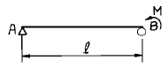
- 1 : 2
- 2 : 1
- 1 : 3
- 3 : 1
(정답률: 알수없음)
8. 길이 ℓ =3m의 단순보가 등분포 하중 W=400 kgf/m 을 받고 있다. 이 보의 단면은 폭 12cm, 높이 20cm의 사각형 단면이고 탄성계수 E = 1.0 × 105 kgf/cm2 이다. 이 보의 최대 처짐량을 구한 값은?
- 0.53 cm
- 0.36 cm
- 0.27 cm
- 0.18 cm
(정답률: 알수없음)
9. 그림과 같은 장주의 강도를 옳게 관계시킨 것은? (단, 동질의 동단면으로 한다.)
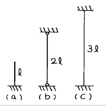
- (a) ＞ (b) ＞ (c)
- (a) ＞ (b) = (c)
- (a) = (b) = (c)
- (a) = (b) ＜ (c)
(정답률: 알수없음)
10. 길이 1.5m, 지름 30mm의 원형단면을 가진 1단고정, 타단자유인 기둥의 좌굴하중을 Euler의 공식으로 구하면? (단, E=2.1×106kgf/cm2, π =3.14)
- 915 kgf
- 785 kgf
- 826 kgf
- 697 kgf
(정답률: 알수없음)
11. 다음 그림과 같은 정정 라멘의 C점에 생기는 휨모멘트는 얼마인가?
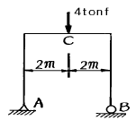
- 3 tonf· m
- 4 tonf· m
- 5 tonf· m
- 6 tonf· m
(정답률: 알수없음)
12. 탄성 에너지에 대한 설명으로 옳은 것은?
- 응력에 반비례하고 탄성계수에 비례한다.
- 응력의 제곱에 반비례하고 탄성계수에 비례한다.
- 응력에 비례하고 탄성계수의 제곱에 비례한다.
- 응력의 제곱에 비례하고 탄성계수에 반비례한다.
(정답률: 알수없음)
13. 그림과 같은 1차 부정정보의 부재중에서 모멘트가 0이 되는 곳은 A점에서 얼마 떨어진 곳인가? (단, 자중은 무시한다.)
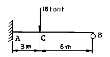
- 3 m
- 2.50 m
- 1.95 m
- 1.50 m
(정답률: 알수없음)
14. 다음 그림의 OA 부재의 분배율은? (단, I는 단면 2차 모멘트)
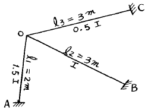
- 2/7
- 4/7
- 2/5
- 3/5
(정답률: 알수없음)
15. x축으로부터 빗금친 부분의 도형에 대한 도심까지의 거리를 구하면?
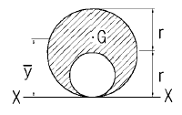
- (4/6)r
- (5/6)r
- (6/6)r
- (7/6)r
(정답률: 알수없음)
16. 직경 D인 원형 단면의 단면 계수는?
- πD4 / 16
- πD3 / 16
- πD4 / 32
- πD3 / 32
(정답률: 알수없음)
17. 다음의 캔틸레버보에서 자유단 A점에서의 수직처짐은 얼마인가? (단, EI는 일정하다.)
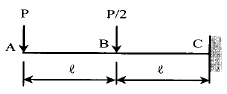
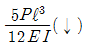
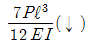
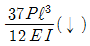
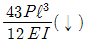
(정답률: 알수없음)
18. "재료가 탄성적이고 Hooke의 법칙을 따르는 구조물에서 지점침하와 온도 변화가 없을 때 한 역계 Pn에 의해 변형되는 동안에 다른 역계 Pm가 한 외적인 가상일은 Pm역계에 의해 변형하는 동안에 Pn역계가 한 외적인 가상일과 같다" 는 것은 다음중 어느 것인가?
- 가상일의 원리
- 카스틸리아노의 정리
- 베티의 법칙
- 최소일의 정리
(정답률: 알수없음)
19. 그림과 같은 단순보에서 최대 휨모멘트가 발생하는 위치는? (단, A점으로부터의 거리 X로 나타낸다.)
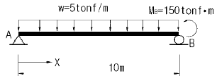
- X = 6m
- X = 7m
- X = 8m
- X = 9m
(정답률: 알수없음)
20. 그림과 같은 트러스에서 하현재L의 부재력은?
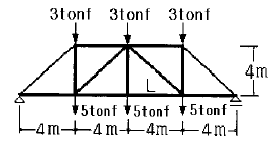
- 16tonf(인장)
- -16tonf(압축)
- 12tonf(인장)
- -12tonf(압축)
(정답률: 알수없음)
2과목: 측량학
21. 축척 1/600인 평판측량에서 도상 위치오차를 0.2mm 이하로 하였을 때 허용되는 구심오차의 한계는?
- 12cm
- 8cm
- 6cm
- 4cm
(정답률: 알수없음)
22. 다음은 등고선에 관한 설명이다. 틀린 내용은?
- 간곡선은 계곡선 보다 가는 직선으로 나타낸다.
- 주곡선 간격이 10m이면 간곡선 간격은 5m 이다.
- 계곡선은 주곡선 보다 굵은 실선으로 나타낸다.
- 계곡선은 주곡선 간격의 5배마다 굵은 실선으로 나타낸다.
(정답률: 알수없음)
23. 삼각측량의 선점에 대한 다음의 설명 중 비교적 중요하지 않은 것은?
- 기선 상의 점들은 서로 잘 보여야 한다.
- 직접 수준측량이 용이한 점이어야 한다.
- 삼각점들은 되도록이면 정삼각형이 되도록 한다.
- 기선은 부근의 삼각점과 연결이 편리한 곳이어야 한다.
(정답률: 알수없음)
24. 하천, 항만, 해안측량 등에서 수심측량을 하여 고저를 표시하는 방법은?
- 음영법
- 등고선법
- 영선법
- 점고법
(정답률: 알수없음)
25. 30m 테이프의 길이를 표준자와 비교 검증하였더니 30.03m 이었다. 만약 이 테이프를 사용하여 면적을 계산하였다면 면적정밀도는 얼마인가?
- 1/50
- 1/100
- 1/500
- 1/1000
(정답률: 알수없음)
26. 토공작업을 수반하는 종단면도에 계획선을 넣을 때 염두에 두어야 할 것 중에서 옳지 않은 것은?
- 절토량과 성토량은 거의 같게 한다.
- 절토는 성토로 이용할 수 있도록 운반거리를 고려 해야 한다.
- 계획선은 될 수 있는대로 요구에 맞게 한다.
- 경사와 곡선을 병설해야 하고 제한내에 있도록 하여야 한다.
(정답률: 알수없음)
27. 기포관의 기포를 중앙에 있게 하여 100m 떨어져 있는 곳의 표척 높이를 읽고 기포를 중앙에서 5눈금 이동하여 표척의 눈금을 읽은 결과 그의 차가 0.⑤m이었다면 감도는 얼마인가?
- 19.6"
- 20.6"
- 21.6"
- 22.6"
(정답률: 알수없음)
28. 도로시점에서 교점까지의 추가거리가 546.42m 이고, 교각이 38° 16′ 40″ 일 때 곡선반경 300m인 단곡선에서 시단현의 편각 δ1의 값은? (단, 중심말뚝 간격은 20m 이다.)
- 0° 15′ 38″
- 1° 54′ 35″
- 1° 35′ 54″
- 1° 41′ 22″
(정답률: 알수없음)
29. 다각측량에서 8각형의 폐합다각형을 편각법으로 측각하여 오차가 없다고 할 때 편각의 총합은 얼마인가?
- 180°
- 360°
- 540°
- 1080°
(정답률: 알수없음)
30. 촬영고도 3000m인 항공사진에서 사진연직점으로부터 12㎝ 떨어진 위치에 나타난 토지의 기복변위는 얼마인가? (단, 해당토지는 기준면으로부터의 비고가 200m이다.)
- 800㎝
- 80㎝
- 8㎝
- 0.8㎝
(정답률: 알수없음)
31. 면적계산에서 삼각형의 세변의 길이가 각각 a=72m, b=63m, c=54m일 때 면적은 얼마인가?
- 1647m2
- 130m2
- 498m2
- 39m2
(정답률: 알수없음)
32. 매개변수 A=100m인 클로소이드 곡선길이 50m에 대한 반지름은?
- 20m
- 150m
- 200m
- 500m
(정답률: 알수없음)
33. 단곡선 설치에서 I = 60°, R = 300m 일 때 곡선길이는?
- 314.16m
- 331.27m
- 352.36m
- 376.21m
(정답률: 알수없음)
34. 수심측량을 하기 위해 그림과 같이 P점으로부터 20m되는 곳에 Q점을 설치하고 트랜싯을 세웠다. 측량지점이 P점으로부터 50m라면 트랜싯으로 시준해야 할 각도는?
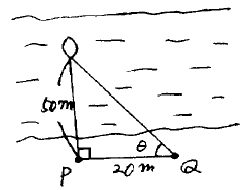
- 21° 48′ ⑤″
- 72° 08′ 45″
- 36° 18′ 35″
- 68° 11′ 55″
(정답률: 알수없음)
35. 사진기의 경사, 지표면의 비고를 조정하여 등고선을 삽입한 사진지도는?
- 정사투영 사진지도
- 조정집성 사진지도
- 약조정집성 사진지도
- 반조정집성 사진지도
(정답률: 알수없음)
36. 노선측량의 종단면도를 작성하고자 한다. 노선방향(횡방향)의 축척이 1/5000 일 때 일반적인 종방향의 축척은?
- 1/500
- 1/1000
- 1/2500
- 1/5000
(정답률: 알수없음)
37. 도상에서 방향선 길이 10㎝, 도상의 허용외심오차를 0.1㎜라 하면 외심거리 3㎝인 앨리데이드로 관측할 때의 축척은?
- 1/100
- 1/200
- 1/300
- 1/600
(정답률: 알수없음)
38. 다음 용어의 설명 중 틀린 것은?
- 후시(B.S) : 기지점에 세운 표척의 눈금을 읽는 것
- 전시(F.S) : 표고를 구하려는 점에 세운 표척의 눈금을 읽는 것
- 기계고(I.H) : 지표면으로부터 망원경의 시준선까지의 높이
- 전환점(T.P) : 전시만 하는 점으로 표고를 관측할 점
(정답률: 알수없음)
39. 트랜싯으로 수평각을 관측하는 경우, 조정 불완전으로 인한 오차를 최소로 하기 위한 방법으로 가장 좋은 것은?
- 관측방법을 바꾸어 가면서 관측한다.
- 여러번 반복 관측하여 평균값을 구한다.
- 정.반위관측을 실시 평균한다.
- 관측값을 수학적인 방법을 이용하여 정밀하게 조정한다.
(정답률: 알수없음)
40. 다음 설명 중 틀린 것은?
- Geoid는 중력의 등포텐셜면이다.
- 준거타원체는 일반적으로 해안선에서 조금 떨어진 곳에서 Geoid와 만난다.
- 연직선편차란 준거타원체에 대한 수직선과 Geoid 에 대한 수직선의 차이이다.
- Geoid는 극지방을 제외한 전 지역에서 회전타원체와 일치한다.
(정답률: 알수없음)
3과목: 수리학
41. 제외지 수위 6m, 제내지 수위 2m, 투수계수 k = 0.5m/s, 침투수가 통하는 길이 ℓ = 50m일 때 하천 제방단면 1m당 누수량은?
- 0.16m3/sec
- 0.32m3/sec
- 0.96m3/sec
- 1.28m3/sec
(정답률: 알수없음)
42. 삼각 위어의 유량(Q)과 수심(h)과의 관계에 대한 설명으로 옳은 것은?
- 유량은 수심에 비례한다.
- 유량은 수심의 제곱에 비례한다.
- 유량은 수심의 1.5승에 비례한다.
- 유량은 수심의 2.5승에 비례한다.
(정답률: 알수없음)
43. 다음 그림의 수문순환 과정 중 유출에 관한 사항으로 옳은 것은? (단,지층은 우측(B유역쪽)으로 경사짐.)
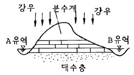
- 유역면적은 A유역과 B유역을 합해 1개의 유역면적으로 보아 유출량을 산출한다.
- A유역에서 강수량은 좌측으로 표면유출되고 침투된 지하수는 우측으로 흐르게 된다.
- B유역에서의 강수량은 지하로 침투, 대수층을 통하여 모두 A유역으로 유출된다.
- AB유역 모두 식생물이 없으므로 지표에 내린 강우량은 손실없이 모두 하천으로 유출된다.
(정답률: 알수없음)
44. 다음 그림과 같이 직경 8㎝인 분류가 35m/sec의 속도로 관의 벽면에 부딪힌 후 최초의 흐름 방향에서 150° 수평방향 변화를 하였다. 관의 벽면이 최초의 흐름 방향으로 10m/sec의 속도로 이동할 때, 관벽면에 작용하는 힘은?
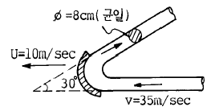
- 0.16ton
- 0.36ton
- 0.62ton
- 0.76ton
(정답률: 알수없음)
45. 다음 물의 순환과정(Hydrologic cycle)에 관한 설명 중 틀린 것은?
- 물의 순환은 바다로 부터의 물의 증발로 시작되어 강수, 차단, 침투, 침루 저류, 유출 등과 같은 여러 복잡한 반복과정을 거치는 물의 이동현상이다.
- 물의 순환과정 중 주요성분은 강수, 증발 및 증산, 지표수 유출 및 지하수 유출이다.
- 물의 순환과정을 통한 물의 이동은 시공간적 변동성을 통상 가지지 않고, 일정비율로 연속된다.
- 물의 순환을 물수지 방정식으로 표현하면, (강수량=유출량 + 증발산량 + 침투량 + 저류량)이다.
(정답률: 알수없음)
46. 오리피스에서 유출되는 실제유량은 Q = Ca· Cv· A· V로 표현한다.이 때 수축계수 Ca는? (단, AO는 수맥의 최소 단면적, A는 오리피스의 단면적, V는 실제유속, VO는 이론유속)
- Ca = AO / A
- Ca = VO / V
- Ca = A / AO
- Ca = V / VO
(정답률: 알수없음)
47. 길이 3,000m, 관지름 600㎜의 주철관에 유속이 1.96m/s 일 때 마찰손실수두는? (단,마찰손실계수 f = 0.02)
- 19.6m
- 1.96m
- 2.76m
- 15.6m
(정답률: 알수없음)
48. 다음 중 침투능을 추정하는 방법은?
- N-DAY 법
- W-Index법
- Stevens법
- 주지하수 감수곡선법
(정답률: 알수없음)
49. 지형이 비교적 균일하며 우량관측점이 많고 또 균등하게 분포되어 있을 때 적용이 가장 적합한 평균우량산정법은?
- 지배권법
- 티이센법
- 등우선법
- 산술평균법
(정답률: 알수없음)
50. 수심이 3m,유속이 2m/sec인 개수로의 비에너지 값은? (단, 에너지 보정계수는 1.1이다.)
- 1.22m
- 2.22m
- 3.22m
- 4.22m
(정답률: 알수없음)
51. 수리상 유리한 콘크리이트 사각단면수로에서 수심이 1m일 때 chezy의 유속계수 C는? (단, n = 0.03이다.)
- 33.3
- 29.7
- 23
- 51
(정답률: 알수없음)
52. 강우량과 유출의 자료 등 관측기록이 없는 미계측 유역에서 경험적으로 단위도를 구하는 방법은?
- 순간 단위 유량도
- 유역 단위 유량도
- 합성 단위 유량도
- 지하수 단위 유량도
(정답률: 알수없음)
53. 관수로의 마찰손실수두(hL)에 대한 다음 설명 중 옳지 않은 것은?
- 관의 지름(D)에 비례한다.
- 레이놀드수(Re)에 반비례한다.
- 관수로의 길이(ℓ )에 비례한다.
- 관내 유속(V)의 제곱에 비례한다.
(정답률: 알수없음)
54. 다음 피토우관에서 A점의 유속을 구하는 식은?
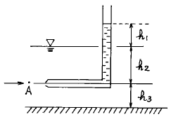
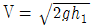
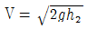
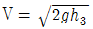
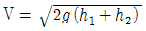
(정답률: 30%)
55. 다음 중 DAD해석과 관계없는 것은 무엇인가?
- 증발량
- 강우량
- 유역면적
- 강우지속시간
(정답률: 알수없음)
56. 그림과 같은 제방을 지나는 수문에 작용하는 전수압은? (단, 폭은 4m)
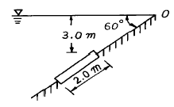
- 8.6ton
- 12.4ton
- 21.6ton
- 30.9ton
(정답률: 알수없음)
57. 그림과 같이 수평으로 놓은 관의 내경이 A에서 50㎝이고 B에서 25㎝로 축소되고 다시 C점에서 50㎝로 되었다. 유량이 340ℓ /sec일때 B점과 A점의 압력차 PB – PA를 구한값은?
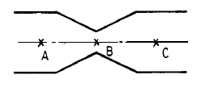
- 2.3㎏/㎝2
- 0.23㎏/㎝2
- 0.023㎏/㎝2
- 23㎏/㎝2
(정답률: 알수없음)
58. 반지름 1.5m의 강관에 압력수두 100m의 물이 흐른다. 강재의 허용응력이 1,500kg/㎝2일 때 강관의 최소 두께는 얼마인가?
- 1.0㎝
- 0.5㎝
- 0.98㎝
- 10㎝
(정답률: 알수없음)
59. 수압이 3㎏/㎝2일 때 압력수두(壓力水頭)는?
- 30m
- 3m
- 33.33m
- 3.33m
(정답률: 알수없음)
60. 다음 차원 방정식 중 옳지 않은 것은?
- 밀도 : [FL-4T2]
- 동점성 계수 : [L2T-1]
- 점성계수 : [ML-1T-1]
- 일, 에너지 : [ML]
(정답률: 알수없음)
4과목: 철근콘크리트 및 강구조
61. 다음 중 PSC의 포스트텐션 방식에서만 발생하는 손실은?
- 정착장치의 활동 손실
- 탄성 수축
- 마찰 손실
- 크리프 손실
(정답률: 알수없음)
62. 지간 6m인 그림과 같은 단순보에 w = 3tonf/m(자중포함)가 작용하고 있다. PS강재를 단면도심에 배치할 때 보의 하면에서 5kgf/cm2의 압축응력을 받을 수 있도록 한다면 PS강재에 얼마의 긴장력이 작용되어야 하는가?
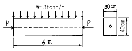
- 187.5 tonf
- 208.5 tonf
- 232.5 tonf
- 288.3 tonf
(정답률: 알수없음)
63. PS 강재에서 인장응력 fp=10,000kgf/cm2, 콘크리트의 압축응력 fc=60kgf/cm2, 콘크리트의 크리프계수 φt=2.0, n=6일때 크리프에 의한 PS 강재 인장응력의 감소율은?
- 5.6%
- 7.2%
- 8.6%
- 9.6%
(정답률: 알수없음)
64. 리벳(Rivet)이음에서 리벳 1본의 허용강도는?
- 허용전단강도를 계산해서 그 값으로 한다.
- 허용전단강도와 허용지압강도를 계산해서 그중 작은 값을 택한다.
- 허용전단강도와 허용지압강도를 계산해서 그중 큰값을 택한다.
- 허용전단강도와 허용지압강도의 평균값을 택한다.
(정답률: 알수없음)
65. 강도설계법에서 부재의 설계에 대한 가정 중에서 틀린 것은?
- 콘크리트의 압축연단에서 이용할 수 있는 최대변형률은 0.0⑤로 가정한다.
- 콘크리트의 변형률은 중립축에서의 거리에 직접 비례한다고 가정한다.
- 철근의 변형률은 중립축에서의 거리에 직접 비례한다고 가정한다.
- 콘크리트의 인장강도는 철근콘크리트의 계산에서 무시한다.
(정답률: 알수없음)
66. 콘크리트의 균열에 대한 다음 설명 중 틀린 것은?
- 이형철근을 사용하면 균열 폭이 최소로 된다.
- 하중으로 인해 발생하는 균열의 최대 폭은 철근응력에 비례한다.
- 콘크리트 표면의 균열 폭은 콘크리트 피복두께에 반비례한다.
- 철근을 인장측 콘크리트에 잘 분포시키면 휨균열의 폭이 최소로 된다.
(정답률: 알수없음)
67. 기둥 연결부에서 단면치수가 변하는 경우에 배치되는 주철근은?
- 옵셋 굽힘철근
- 연결철근
- 종방향 철근
- 횡방향 철근
(정답률: 알수없음)
68. 전단철근이 부담하는 전단강도 Vs 가 2.12 √fck bW d를 초과하는 경우의 조치로 가장 합리적인 것은?(단, fck의 단위는 kgf/cm2이다.)
- 전단철근의 간격을 1/2로 줄인다.
- 스트럽과 굽힘철근을 병용한다.
- 콘크리트 단면을 증가시킨다.
- 최소한의 전단철근을 배근한다.
(정답률: 알수없음)
69. 그림과 같은 T형보에서 플랜지 부분의 압축력과 균형을 이루기 위한 철근단면적 Asf는 얼마인가? (단, 강도설계법에 의함, fck = 210㎏f/㎝2, fy = 4200㎏f/㎝2)
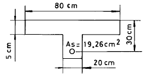
- 10.25㎝2
- 12.75㎝2
- 14.65㎝2
- 16.75㎝2
(정답률: 알수없음)
70. PS 강재를 긴장한 채 일정한 길이로 유지해 두면 시간의 경과와 더불어 인장응력이 감소한다. 이와 같은 현상은?
- PS 강재의 지연파괴
- PS 강재의 응력부식
- PS 강재의 릴랙세이션
- PS 강재의 크리프
(정답률: 알수없음)
71. 연속보 또는 1방향 슬래브에서 모멘트와 전단력을 구하기 위해서 근사해법을 적용할 수 있는 조건 중에서 맞지 않는 것은?
- 활하중이 고정하중의 3배를 초과하는 경우
- 등분포 하중이 작용하는 경우
- 인접 2경간의 차이가 짧은 경간의 20% 이상 차이가 나지 않는 경우
- 부재의 단면 크기가 일정한 경우
(정답률: 알수없음)
72. b = 30㎝, d = 50㎝인 단철근 직사각형보에서 균형철근비 ρb = 0.0285일 때, 최대 유효 철근량은?
- 28.2 ㎝2
- 30.0 ㎝2
- 32.1 ㎝2
- 36.4 ㎝2
(정답률: 알수없음)
73. 단철근 직사각형 보에서 fck = 210kgf/㎝2, fy = 3000kgf/㎝2 일 때 균형철근비는?
- 0.034
- 0.025
- 0.043
- 0.⑤2
(정답률: 알수없음)
74. 단철근 직사각형보에서 항복응력 fy = 3,000㎏f/㎝2, d = 60㎝일 때 중립축 거리 C를 구한 값 중 옳은 것은? (단, 강도 설계법에 의한 균형보임)
- 40.0㎝
- 44.7㎝
- 48.3㎝
- 53.7㎝
(정답률: 알수없음)
75. 다음 그림에서 인장 철근의 배근이 잘못된 것은?
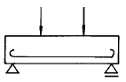
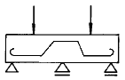
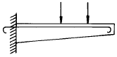
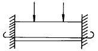
(정답률: 알수없음)
76. 깊은 보는 주로 어느 작용에 의하여 전단력에 저항하는가?
- 장부작용(dowel action)
- 골재 맞물림(aggregate interaction)
- 전단마찰(shear friction)
- 아치작용(arch action)
(정답률: 알수없음)
77. 다음 그림의 고장력 볼트 마찰이음에서 필요한 볼트 수는 몇 개인가? (단, 볼트는 M24(=φ24mm), F10T를 사용하며, 마찰이음의 허용력은 5600kgf이다.)
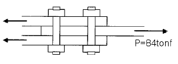
- 5개
- 6개
- 7개
- 8개
(정답률: 알수없음)
78. 아래 조건에서 슬래브와 보가 일체로 타설된 대칭 T형보의 유효폭은 얼마인가?
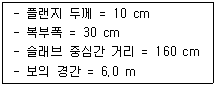
- 150 cm
- 160 cm
- 190 cm
- 200 cm
(정답률: 알수없음)
79. 강도설계법에서 인장을 받는 이형철근의 정착길이 ℓd는 최소 얼마 이상이라야 하는가? (단, 갈고리가 없는 경우이다.)
- 30cm 이상
- 25cm 이상
- 20cm 이상
- 10cm 이상
(정답률: 알수없음)
80. 인장철근의 종류에 따른 표준갈고리의 최소구부림 반경을 나타낸 것이다. 옳지 않은 것은?
- D19-철근 지름의 3배
- D25-철근 지름의 3배
- D29-철근 지름의 4배
- D32-철근 지름의 5배
(정답률: 알수없음)
5과목: 토질 및 기초
81. 말뚝재하실험시 연약점토지반인 경우는 pile의 타입 후 20여 일이 지난 다음 말뚝재하실험을 한다. 그 이유로 가장 타당한 것은?
- 주면 마찰력이 너무 크게 작용하기 때문에
- 부마찰력이 생겼기 때문에
- 타입시 주변이 교란되었기 때문에
- 주위가 압축되었기 때문에
(정답률: 알수없음)
82. 다음 중 느슨한 모래의 전단변위와 응력의 관계곡선으로 옳은 것은? (단, 그래프의 가로축은 전단변위, 세로축은 전단응력을 나타냄)
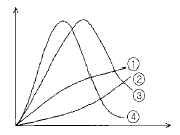
- ①
- ②
- ③
- ④
(정답률: 알수없음)
83. 다음과 같은 연약지반 개량공법 중에서 영구적인 공법은 어느 것에 해당되는가?
- Well point 공법
- 대기압 공법
- 치환 공법
- 동결 공법
(정답률: 알수없음)
84. 어떤 점성토에 수직응력 40㎏/㎝2를 가하여 전단시켰다. 전단면상의 공극수압이 10㎏/㎝2이고 유효응력에 대한 점착력,내부마찰각이 각각 0.2㎏/㎝2, 20° 이면 전단 강도는 얼마인가?
- 6.4㎏/㎝2
- 10.4㎏/㎝2
- 11.1㎏/㎝2
- 18.4㎏/㎝2
(정답률: 알수없음)
85. 평판재하시험에서 결과를 이용할 때 고려해야 할 사항들 중 틀린 것은?
- scale effect를 고려할 때 모래지반의 경우 지지력은 재하판의 폭에 비례한다.
- scale effect를 고려할 때 점토지반의 침하량은 재하판의 폭에 무관하다.
- 지하수위가 상승하면 흙의 유효밀도는 약 50% 정도저하하며 강도는 약 1/2 정도 작아진다.
- 허용지지력은 항복하중의 1/2, 극한하중의 1/3의 값 중 작은 값으로 결정한다.
(정답률: 알수없음)
86. 절편법에 의한 사면의 안정해석시 제일 먼저 결정되어야 할 사항은?
- 가상활동면
- 절편의 중량
- 활동면상의 점착력
- 활동면상의 내부마찰각
(정답률: 알수없음)
87. 다음 그림에서 분사현상에 대한 안전률은 얼마인가? (단, 모래의 비중은 2.65, 간극비는 0.6 이다.)
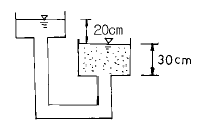
- 1.01
- 2.45
- 1.55
- 1.86
(정답률: 알수없음)
88. 공극비 e = 0.65,함수비 w = 20.5%,비중 Gs = 2.69인 사질점토가 있다. 이 흙의 습윤밀도 γt는?
- 1.63g/㎝3
- 1.96g/㎝3
- 1.02g/㎝3
- 1.35g/㎝3
(정답률: 알수없음)
89. 모래 치환법에 의한 흙의 들밀도 실험결과가 아래와 같다. 현장 흙의 건조단위중량은?
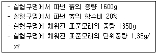
- 0.93g/㎝3
- 1.13g/㎝3
- 1.33g/㎝3
- 1.53g/㎝3
(정답률: 알수없음)
90. 직경 2㎜의 유리관을 15℃의 정수중에 세웠을때 모관상승고는 얼마인가? (단, 물과 유리관의 접촉각은 9°, 표면장력은 0.075g/㎝)
- 0.15㎝
- 1.1㎝
- 1.48㎝
- 15.0㎝
(정답률: 알수없음)
91. 아래 그림에서 점토 중앙 단면에 작용하는 유효 응력은 얼마인가?
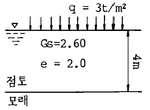
- 1.25t/m2
- 2.37t/m2
- 3.25t/m2
- 4.07t/m2
(정답률: 알수없음)
92. 노상토의 지지력을 나타내는 CBR값의 단위는?
- ㎏/㎝2
- ㎏/㎝
- ㎏/㎝3
- %
(정답률: 알수없음)
93. 다음 중에서 정지토압 Po, 주동토압 PA, 수동토압 Pp의 크기 순서가 옳은 것은 어느 것인가?
- Pp ＜ Po ＜ PA
- Po ＜ PA ＜ Pp
- Po ＜ Pp ＜ PA
- PA ＜ Po ＜ Pp
(정답률: 알수없음)
94. 어떤 흙의 입경가적곡선에서 D10=0.⑤mm, D30=0.09mm, D60=0.15mm이었다. 균등계수 Cu와 곡률계수 Cg의 값은?
- Cu=3.0, Cg=1.08
- Cu=3.5, Cg=2.08
- Cu=1.7, Cg=2.45
- Cu=2.4, Cg=1.82
(정답률: 알수없음)
95. 다음 중 점성토 지반의 개량 공법으로 적합하지 않은 것은?
- 샌드드레인 공법
- 치환 공법
- 바이브로플로테이션 공법
- 프리로딩 공법
(정답률: 알수없음)
96. 10개의 무리 말뚝기초에 있어서 효율이 0.8, 단항으로 계산한 말뚝 1개의 허용지지력이 10t일 때 군항의 허용 지지력은?
- 50t
- 80t
- 100t
- 125t
(정답률: 알수없음)
97. 연약한 점토지반의 전단강도를 구하는 현장시험 방법은?
- 평판재하 시험
- 현장 CBR 시험
- 직접전단 시험
- Vane 시험
(정답률: 알수없음)
98. 해머의 낙하고 2m, 해머의 중량 4t, 말뚝의 최종 침하량이 2cm일 때 Sander공식을 이용하여 말뚝의 허용지지력을 구하면?
- 50 t
- 100 t
- 80 t
- 160 t
(정답률: 알수없음)
99. 내부마찰각 φ = 0인 점토에 대하여 일축압축 시험을 하여 일축압축 강도 qu = 3.2㎏/㎝2을 얻었다면 점착력 C는?
- 1.2㎏/㎝2
- 1.6㎏/㎝2
- 2.2㎏/㎝2
- 6.4㎏/㎝2
(정답률: 알수없음)
100. 사질토층에 물이 침투할 때 침투유량이 같은 조건에서 만약 사질토의 입경이 2배로 커진다면 침투 동수구배는 몇 배로 변하는가?
- 4 배
- 1/4 배
- 2 배
- 1/2 배
(정답률: 알수없음)
6과목: 상하수도공학
101. 분류식계통에 비교하여 합류식 하수관거계통의 특징에 대한 설명으로 옳지 않은 것은?
- 하수처리장에서 오수 처리비용이 많이 소요된다.
- 청천시 관내에 오염물이 퇴적된다.
- 건설비용이 크게 소요된다.
- 검사 및 관리가 비교적 용이하다.
(정답률: 알수없음)
102. 지하수를 취수할 경우 기본적 자료로서 지하토양과 밀접한 관계가 있는 투수계수를 알아야 한다. 다음 중 투수계수가 가장 낮은 토양은 어느 것인가?
- 자갈(Gravel)
- 모래(Sand)
- 미사토(Silt)
- 점토(Clay)
(정답률: 알수없음)
103. 계획 1일 평균급수량은 계획 1일 최대급수량의 몇 %를 표준으로 해야 하는가?
- 55 ~ 70%
- 70 ~ 85%
- 85 ~ 90%
- 90 ~ 95%
(정답률: 알수없음)
104. 저수지의 수(水)에 대한 특징을 설명한 것으로 거리가 가장 먼 것은?
- 수량변동이 크다.
- 수질이 하천수에 비해 균일하다.
- 조류의 발생우려가 있다.
- 장래 오염의 위험성이 있다.
(정답률: 알수없음)
1⑤. 하수관거의 길이가 2,400m이고, 유입시간이 10분, 평균 유속을 1.0m/s로 가정할 때 유달시간은?
- 20분
- 30분
- 40분
- 50분
(정답률: 알수없음)
106. 1일 처리수량이 30,000m3 인 정수처리장의 급속여과시설을 120m/day의 여과속도로 5개의 여과지를 설치하고자 한다. 이 급속여과지 1개의 소요면적은?
- 50.0m2
- 62.5m2
- 83.3m2
- 125.0m2
(정답률: 알수없음)
107. 합류식의 경우 펌프장에서의 우천시 계획오수량은 계획시간 최대 오수량의 몇 배 이상으로 하는가?
- 1.5
- 2
- 3
- 4
(정답률: 알수없음)
108. 다음중 고도처리방법의 하나인 암모니아 스트리핑법을 이용하여 제거하는 물질은?
- 모래
- 부유물질
- 유기물질
- 질소
(정답률: 알수없음)
109. 다음 중 인버트(invert)를 두지 않아도 되는 것은?
- 오수받이
- 맨홀
- 합류식받이
- 우수받이
(정답률: 알수없음)
110. 상수도의 급수계통으로 알맞은 것은?
- 취수 - 도수 - 정수 - 배수 - 송수 - 급수
- 취수 - 도수 - 송수 - 정수 - 배수 - 급수
- 취수 - 송수 - 정수 - 배수 - 도수 - 급수
- 취수 - 도수 - 정수 - 송수 - 배수 - 급수
(정답률: 알수없음)
111. 배수지 설계시 용량은 1일최대급수량에 몇 시간 분을 사용하는가?
- 4∼8시간
- 6∼8시간
- 8∼12시간
- 12∼14시간
(정답률: 알수없음)
112. 유효수심이 3.2m, 체류시간이 2.7시간인 침전지의 수면적 부하는 얼마인가?
- 20.25m3/m2·day
- 28.44m3/m2·day
- 11.19m3/m2·day
- 31.22m3/m2·day
(정답률: 알수없음)
113. 다음 중 계획시간 최대급수량을 계획급수량의 기준으로 하는 펌프는?
- 취수펌프
- 도수펌프
- 송수펌프
- 배수(配水)펌프
(정답률: 알수없음)
114. 우리나라의 경우 계획우수량을 산정할 때 확률년수는 원칙적으로 얼마로 계산하는가?
- 1∼4년
- 5∼10년
- 11∼14년
- 15∼20년
(정답률: 알수없음)
115. 침전지의 효율을 높이기 위한 사항으로서 틀린 것은?
- 침전지의 표면적을 크게 한다.
- 침전지 내 유속을 크게 한다.
- 유입부에 정류벽을 설치한다.
- 지(池)의 길이에 비하여 폭을 좁게 한다.
(정답률: 알수없음)
116. 다음 우수저류시설중에서 지역내(Onsite) 저류시설이 아닌 것은?
- 주차장저류
- 운동장저류
- 단지내저류
- 우수조정지
(정답률: 알수없음)
117. 응집제의 하나인 황산알루미늄의 장점이라 볼 수 없는 것은?
- 다른 응집제에 비해 가격이 저렴하다.
- 독성이 없으므로 다량으로 주입할 수 있다.
- 결정은 부식성이 없어 취급이 용이하다.
- 플록생성시 적정 pH폭이 넓다.
(정답률: 알수없음)
118. 일반적으로 상하수도의 양수용에 가장 많이 사용 되는 펌프는?
- 원심력 펌프
- 터빈 펌프
- 축류 펌프
- 사류 펌프
(정답률: 알수없음)
119. 표준 활성 슬러지법으로 하수를 처리하고 있다. 유입오수량이 2,000m3/day, 반송슬러지 농도가 10,000mg/L 일 때 포기조의 MLSS를 3,000mg/L로 유지하려면 슬러지 반송유량을 얼마로 하여야 겠는가? (단, 유입수와 유출수의 고형물 농도(SS)는 무시한다.)
- 약 754m3/day
- 약 857m3/day
- 약 913m3/day
- 약 1,⑤2m3/day
(정답률: 알수없음)
120. 하수도계획을 위한 관련계획의 조사에서 토지이용계획의 조사목적은?
- 하수도 계획구역 설정
- 하수도 매설계획
- 하수도 시설의 규모 및 배치
- 펌프의 양정결정
(정답률: 알수없음)
A와 B점에서 작용하는 힘의 합력은 각각 300kgf와 200kgf이므로, 총 500kgf입니다. 따라서, C점에서 작용하는 힘도 500kgf여야 합니다.
이제, P와 BC사이의 거리 x를 구해보겠습니다. P와 BC사이의 거리가 더 멀어질수록 P가 작용하는 힘은 더 작아져야 합니다. 따라서, x가 4m일 때 P는 300kgf여야 합니다.
하지만, x가 3m일 때 P가 400kgf인 경우도 가능합니다. 이 경우, P와 BC사이의 거리가 더 가까워져서 P가 더 큰 힘을 발휘할 수 있기 때문입니다.
따라서, 정답은 "P = 400 kgf, x = 3 m"입니다.